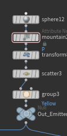
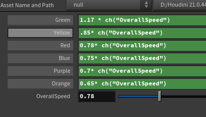

第 2 週
團隊成員
Yiqi Zheng（特效）
Riley Ho（特效）
Itim Kongsakulvatanasook（特效）
Sofia Mancias（合成）
1 月 14 日
Benji Hopkins（外觀開發）
SCAD × HARBOR × ETC － 第 2 週
大家好，這是我 SCAD × Harbor × ETC 部落格的第二週！
以下是週二提案後導師們的回饋。
Kyle：
-
注意攝影機運動，避免太過忙亂。
-
放慢節奏，尤其不要快速掠過特效細節。
-
第二個鏡頭讓人頭暈，減少攝影機移動。
-
攝影機運動減少約 15%，讓觀眾有時間看清特效。
-
每個鏡頭都要突顯特定的產品細節（例如印表機內部，而不只是頂面）。
-
產品要非常精準，注意細節（例如有 LED 燈就要做出來）。
-
確保燈光能讓繪畫感的色彩在黑色背景上清楚呈現。
Hailey：
-
確保色彩在黑色環境中夠突出。
-
色彩與燈光需要強烈的視覺對比。電視廣告的參考很有力也很合適。
Beck：
-
展現產品能做什麼，而不只是產品本身。
-
整體節奏太快，放慢一點來展示特效與細節。
Molly：
-
攝影機運動要更有編排、更有意圖。
-
很多鏡頭結束時產品位置都很像，要多一些變化。
-
鏡頭 2 可以更微距、更特寫。
Stephan：
-
特效可以當作光源（自發光特效）。
Billy：
-
決定是攝影機動還是物體動，避免兩者同時進行。
-
先清楚定義產品的視覺語言。視覺語言確定後，就會知道該強調攝影機運動還是產品細節。
待辦事項：
-
建立流體的流動路徑
-
確保曲線能引導流體形成平滑的流動
-
調整位置與速度以符合分鏡（流體逐一流進孔洞）
流體測試：
依照分鏡，我先做流體測試。基本動作是六道彩色流體從畫面外進來，旋繞在一起，再逐一流進孔洞。
參考資料：
我沒找到動作完全一樣的參考，但找到了流體流進孔洞時應有的樣子。


我先建立曲線作為流體路徑的引導線，並依顏色分組。
建立一個球體作為流體的發射器，再用 popnet 產生粒子，之後可以轉換成流體。


這段 VEX 程式從鄰近的曲線點取樣切線方向，用來驅動粒子速度，讓流體能平滑地沿著曲線流動，同時以參數控制維持一致的速度。
我也做了頂層控制項，用來管理整體流速，並讓各色流體依序流進各自的孔洞。

這些是兩條流體路徑的 flipbook。

我也設定了不同的發射器群組，讓每種顏色沿著對應的路徑流動。還需要研究為什麼流體接近孔洞時會變細。
問題：

我還需要找出流體越接近孔洞越細的原因。
下一步，我打算結合 Vellum solver，讓流體更黏稠、更像顏料，並進一步打磨運動路徑。
-
調整流體路徑
-
整合 Vellum，做出黏稠、像顏料的流體效果